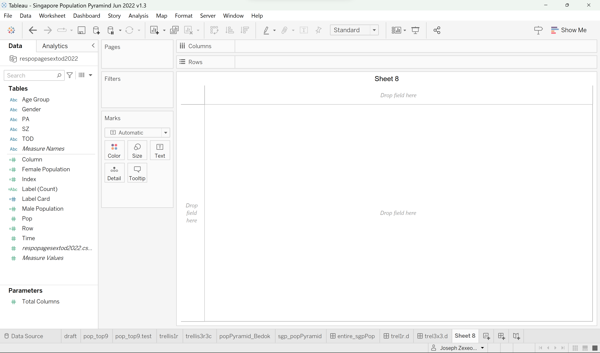
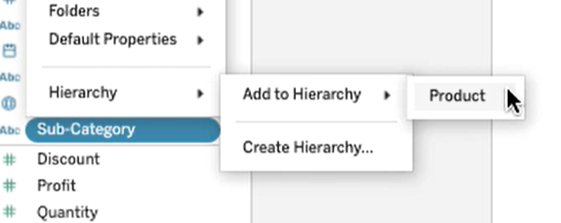
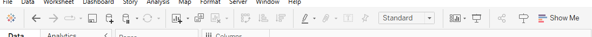

Personal Note
2 types of visual analysis :
Formative visual analysis - during the course of the study to make data-based decisions, such as when to change conditions or make modifications to the intervention.
Summative visual analysis - used after the study is completed to determine both the presence and strength of the functional relation.
1. TABLEAU

1.1 Component & Terminology
| item | term use by Tableau official |
|---|---|
| term - <field> | 2 types : measures, dimensions |
| term - “Columns” or “Rows” | shelf |
| term - “Marks” | card |
| term - “Filter” 2nd column from left | shelf |
| term - “Filter”right column | filter card settings to control the filter’s appearance and functionality. |
| term - “Data” or “Analytics” | pane |
| icon - inverted triangle, next to “View Data” icon. | drop-down arrow |
| window - “Create Parameter” | “dialog box” |
sub-menu - 2nd level or drop down for field level.  |
add to hierarchy = context menus |
| text - location (region, state, city) | not “group” but “hierarchy” |
| space - <largest area of the workspace> | “view” |
icons panel  |
“toolbar” |
| text - Show Me | a list of common visualisation types, recommended visualisation type. |
Remarks :
Dimensions are fields that contain qualitative and descriptive values.1
ID fields are also dimensions.
Can be organised into hierarchies.
Control the level of aggregation of the measures in a visualisation.
Measures are fields that contain numeric, quantitative values that can be aggregated using sum or average functions
Toolbar to access commands, analysis and navigation tools.
Use “Stepped Color”to group values into uniform bins of colour.
1.2 Create Parameter / Calculated Field
The properties and instruction are from “Superstore” workbook from the Tableau Accelerators.
| parameters / calculated field | role | instruction / properties |
|---|---|---|
| p - Base Salary | Integer, range, fixed, | |
| p - Churn Rate | Float, 0.064, range, fixed min = 0, max = 0.25, step size = 0.001 |
|
| cf - Days to Ship Actual | DATEDIFF(‘day’,[Order Date],[Ship Date]) | |
| cf - Days to Ship Scheduled | CASE [Ship Mode] WHEN “Same Day” THEN 0 WHEN “First Class” THEN 1 WHEN “Second Class” THEN 3 WHEN “Standard Class” THEN 6 END |
|
| cf - Profit per Order | Sum([Profit]) / countD([Order ID]) | |
| cf - Order Profitable? | {fixed [Order ID]:sum([Profit])}>0 // or { FIXED [Order ID]: SUM([Profit]) } > 0 // calculates the profit at the order level regardless of the dimensions. |
|
| cf - Profit Ratio | sum([Profit]) / sum([Sales]) | |
| cf - Sales above target? | Marks - Color | If Sum([Sales]) > SUM([Sales Target].[Sales Target]) then “Above Target” else “Below Target” end |
| cf - Sales Forecast | Marks - Detail | [Sales]*(1-[Churn Rate])*(1+[New Business Growth]) |
| cf - Sales per Customer | Sum([Sales]) / countD([Customer Name]) | |
| cf - Ship Status | if [Days to Ship Actual]> [Days to Ship Scheduled] then “Shipped Late” elseIF [Days to Ship Actual]= [Days to Ship Scheduled] then “Shipped On Time” Else “Shipped Early” end |
|
| p - Sort by | String, list, fixed value = % quota ascending, % quota descending, Names |
Remarks :
Use // to add a single-line comment
Use /* */ to add multi-line comment
2. Exploration
2.1 Attempts on Executive Overview
Data : Tableau Superstore
Workbook : Explore Tableau to Create Executive Overview
Footnotes
Tableau.com. The Workspace Area. https://www.tableau.com/learn/tutorials/on-demand/getting-started-part4?playlist=432161↩︎